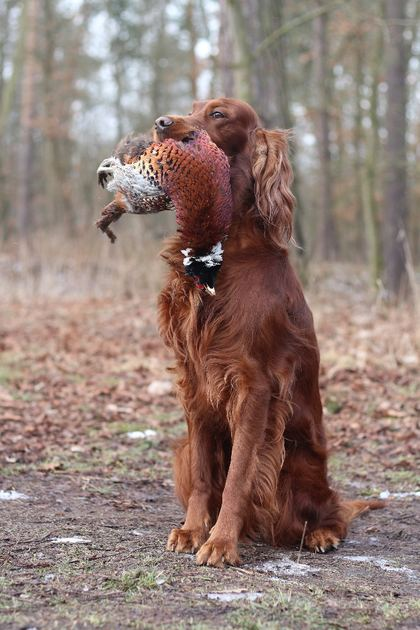
Abrakadabra Zannanza „Kimi“Panička Renata Masařová
ZV - I. cenaPZ - I. cenaSVP - II. cenaLZ - II. cena
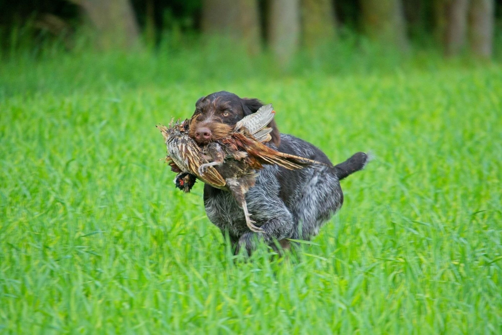
Výcvik, cvičení a příprava k loveckým zkouškám všech loveckých plemen. Cvičíme tak, aby byl spokojený jak páneček, tak pes — a aby byly vidět výsledky.
„Cvičíme tak, aby byl spokojený jak páneček, tak pes a aby byly vidět výsledky.“
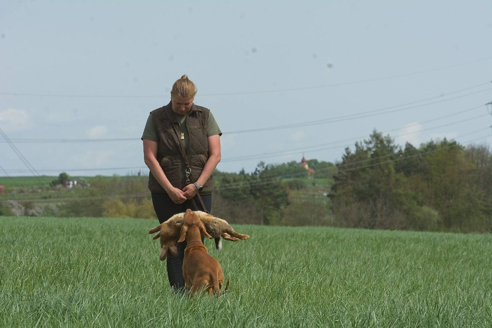
K našim svěřencům se snažíme přistupovat individuálně s přihlédnutím k povaze daného jedince i jeho majitele. Postup výcviku konzultujeme s majitelem, demonstrujeme na našich hafanech a dokládáme výsledky ze zkoušek a z praxe.
Z mnoha majitelů pejsků, kteří s námi začínali, jsou nyní zkušení kynologové, chovatelé, vůdci, myslivci či pouze zodpovědní a spokojení majitelé psů.
Hodiny jsou rozdělené podle úrovně psa i typu zkoušek. Náplň, pomůcky a cenu každé hodiny najdete u výcviku i přímo v rozvrhu.
Popovídáme, probereme vaše představy a seznámíme se s vaším pejskem. Podmínka pro vstup do výcvikových hodin.
zdarma 02I lovecký pes musí být vychovaným rodinným společníkem. Od školičky pro štěňátka po pokročilé.
250 Kčza lekci 03Výcvik v přinášení — základ práce loveckého psa, především plemen ohařů a retrívrů.
250–350 Kčza lekci 04ZN, ZV, OVVR, PZ, SVP, LZ — výcvik pro jednotlivé typy zkoušek dle platných zkušebních řádů.
100–500 Kčza lekci 05Od úvodní hodiny bez psa po práci na starších a složitějších pobarvených stopách.
350–400 Kčza lekci 06Když vám nevyhovují termíny, máte háravou fenku nebo potřebujete doladit disciplíny těsně před zkouškami.
dle dohody 07Příprava na výstavy, předvedení psa, výběr štěňátka i individuální poradenství.
od 350 Kč 08Zkušební řády, výstavní předpisy a úskalí jednotlivých disciplín. Bez psů, se zápisníkem a tužkou.
300 Kčza lekciV menších skupinách dojíždíme do terénů a míst, která jsou pro výcvik vhodná. Vůdce i pejsky seznamujeme s průběhem zkoušek, zkušebními řády a učíme se jednotlivé disciplíny.
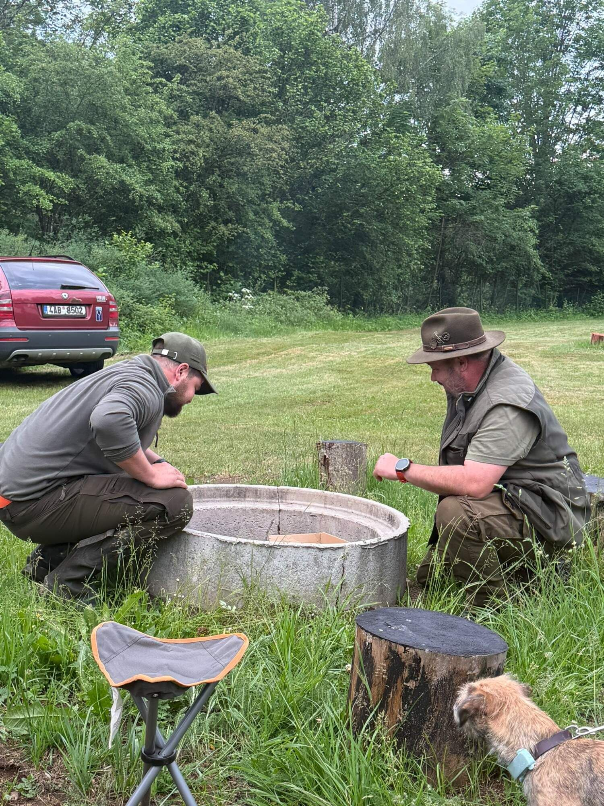
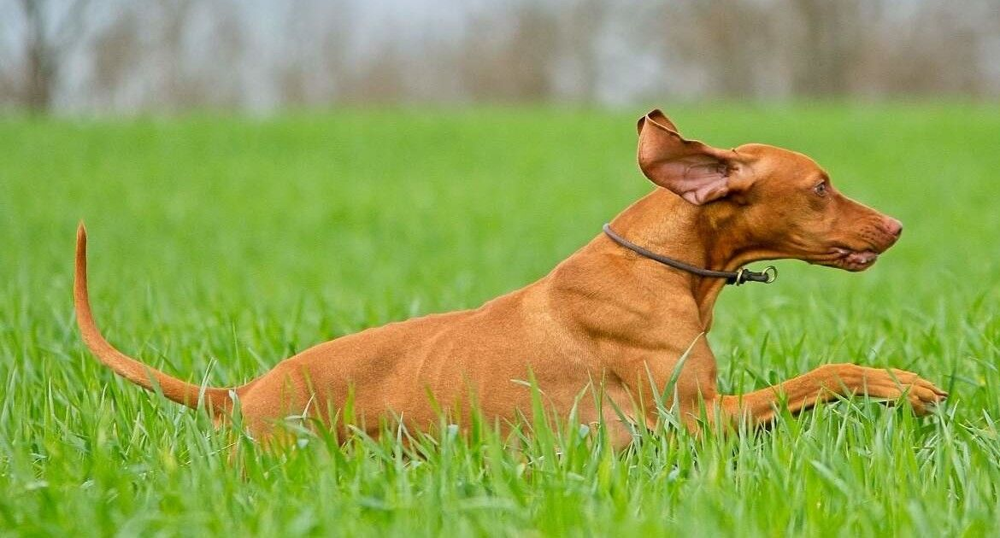
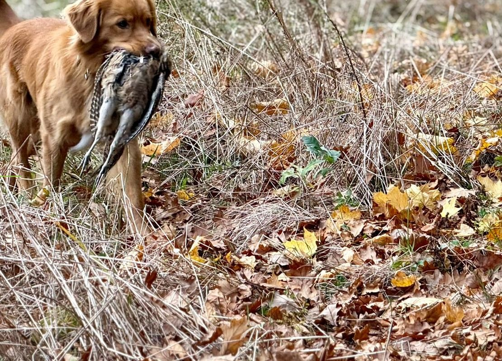

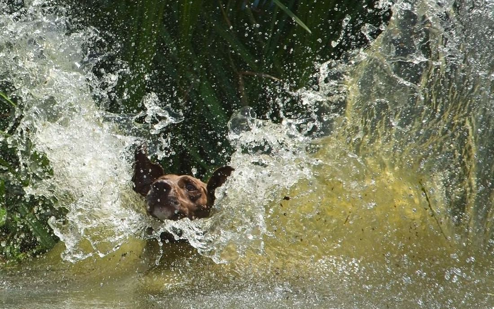
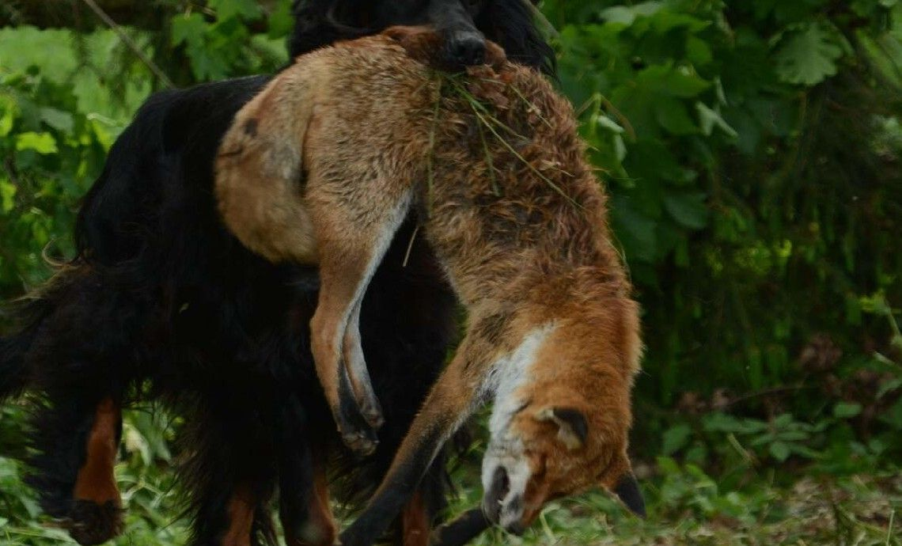
Nácvik bezkontaktního norování na umělé noře (králík, liška). Cvičení Kladno – Kožova Hora.
Práce na divoké či vypouštěné zvěři v terénu. U ohařů nutné zvládnutí povelu down, ovladatelnost na píšťalku a základní poslušnost.
Příprava na zkoušky dle zkušebních řádů, zvěř pro dohledávání bude zajištěna.
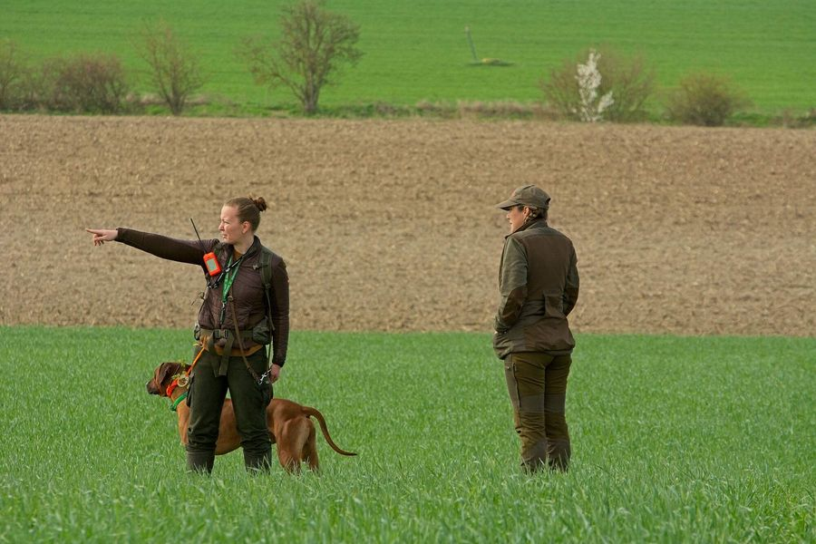
Práce v terénu na divoké a vypouštěné zvěři, nácvik chování po výstřelu, dohledávky, vlečky, přinášení teplé zvěře. Vypouštěnou zvěř a střelce zajistíme.
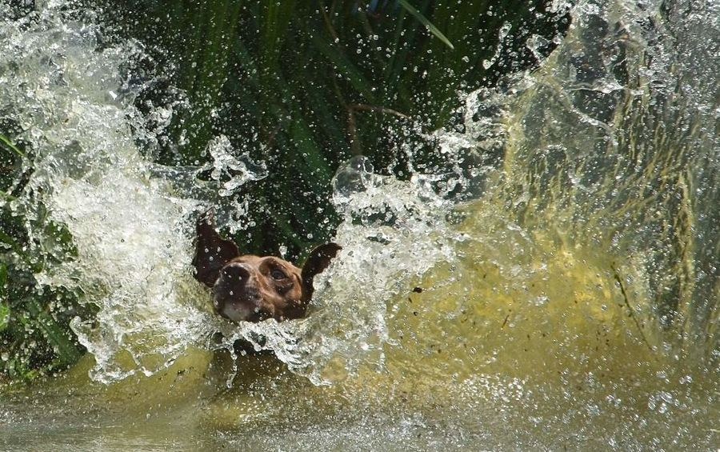
Ovladatelnost na píšťalku a perfektní zvládnutí výcviku v přinášení (kozlík). Zvěř bude zajištěna.
Drobné a aportovací disciplíny zvlášť — od kontaktu psa s vůdcem po těžší aporty, vlečky a dohledávky.
Hodiny do rozvrhu vypisujeme každý týden v neděli/pondělí. Hlaste se prosím na hodiny pro vás určené — a pokud nemůžete dorazit, odhlaste se.
S pár informacemi o Vás, o Vašem pejskovi a Vašich plánech a představách.
Pokud přibíráme nové klienty, domluvíme první individuální schůzku a probereme systém našeho výcviku.
Po našem potvrzení se vám otevře rozvrh a můžete se hlásit na hodiny.
A také úspěchy našich odchovánků na zkouškách. Ze spousty psů, kteří by strávili jistě spokojený život „na gauči“, se stali právoplatní výborní pomocníci při lovu.

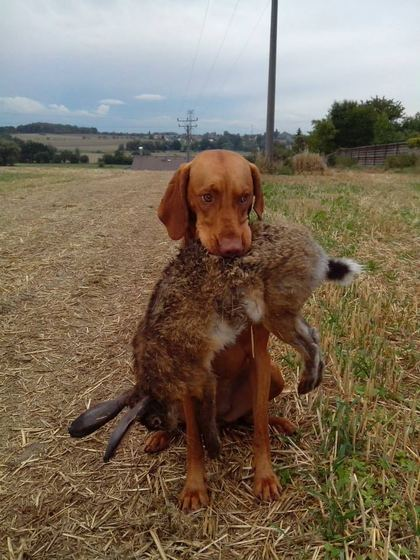
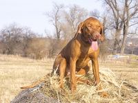
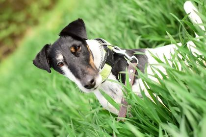
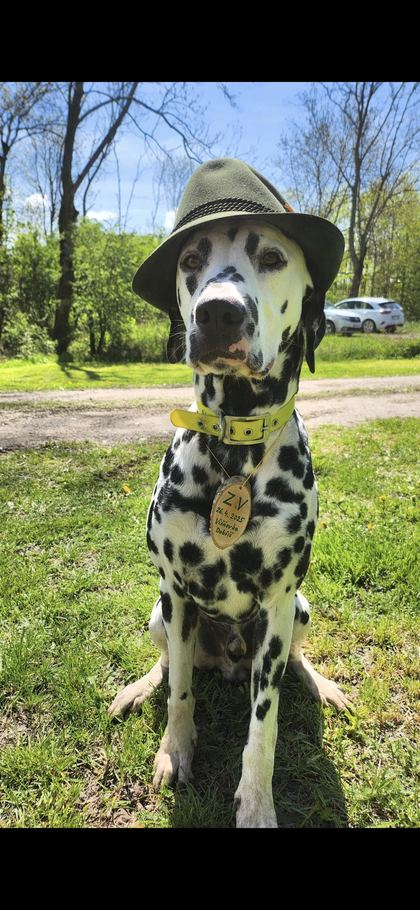
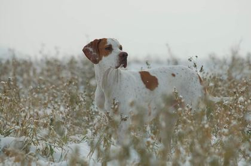
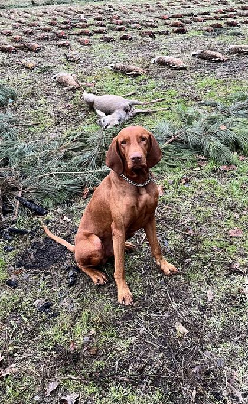
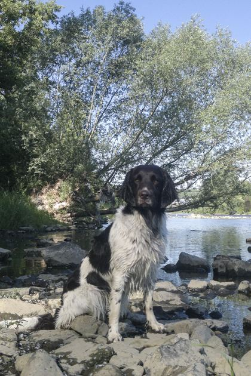
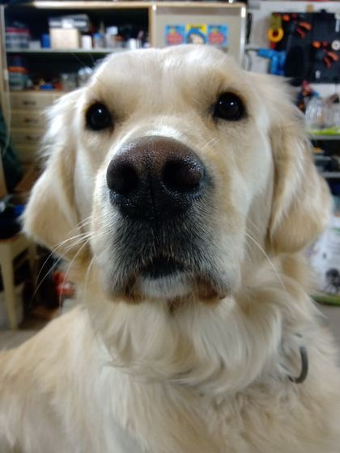
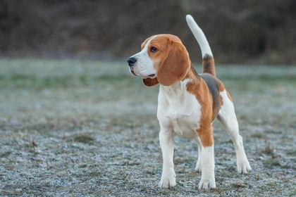
Pobytové přípravy na zkoušky, výcvikový tábor, semináře i přednášky pro všechny majitele a chovatele psů. Počet psů je vždy omezen.
Fotečky z víkendů, táborů a zkoušek průběžně přidáváme do galerie na Rajčeti. Otevřít galerii
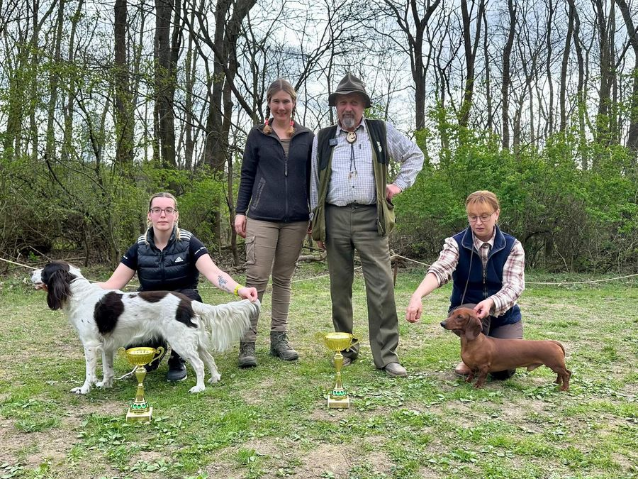
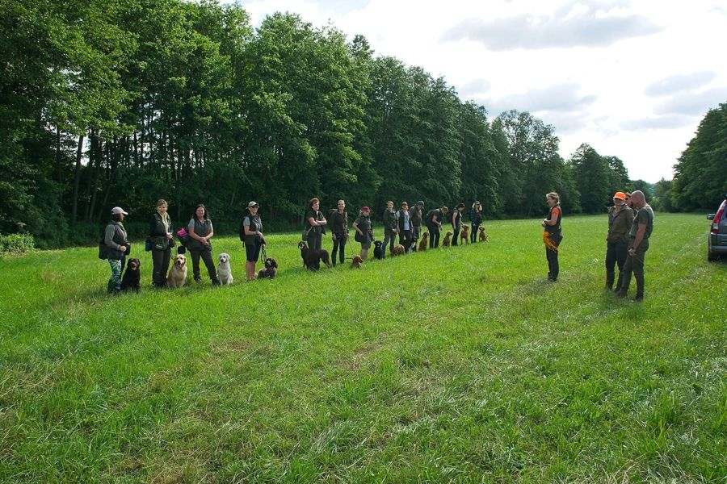
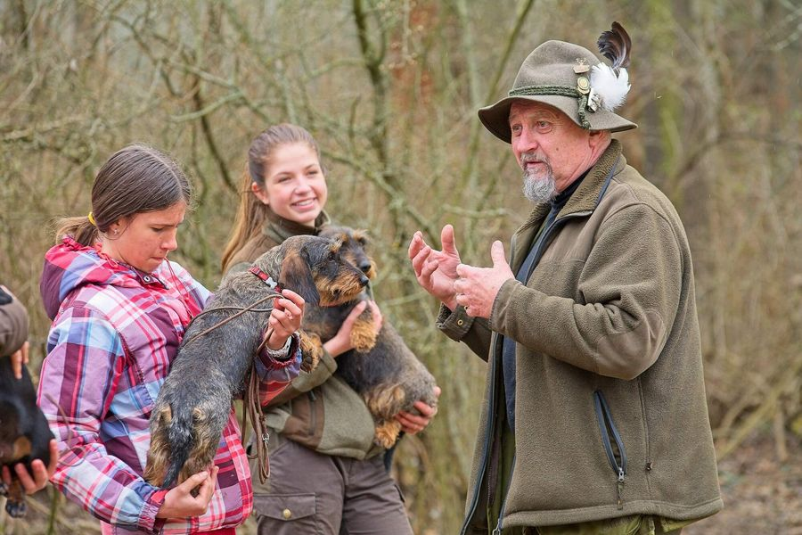
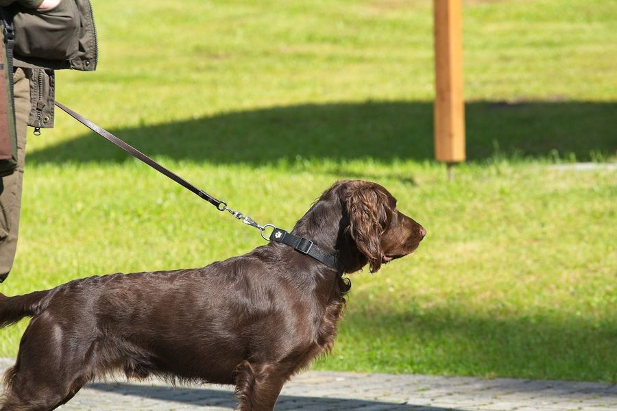
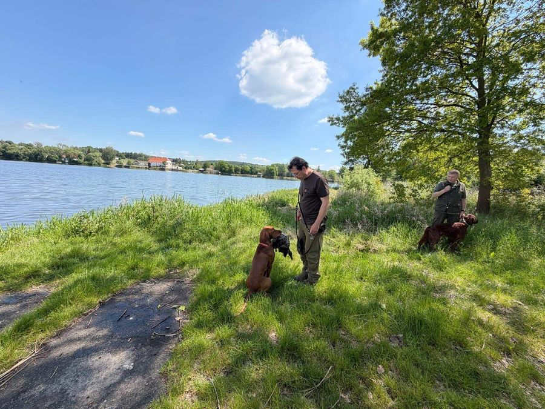